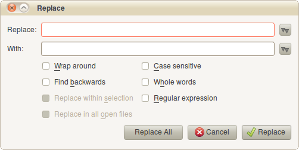
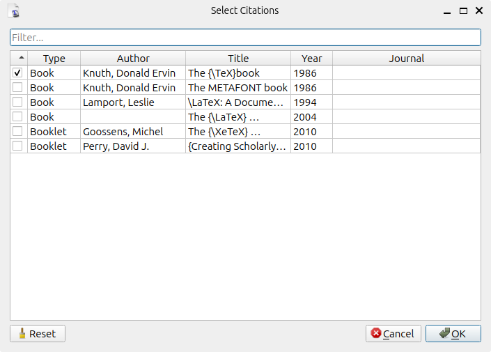

Going further: Editing tools
When you have had some practise with TEXworks, you’ll find the need for more effective tools. Many of them are bundled with TEXworks. We are going to see some of them now.
4.1 Creating a document from a template
Most documents you will create will use the same instructions in the preamble, the same layout settings, similar heading and so on. You can use predefined templates to get started quickly or create your own with all of these settings already in place.
Use File→New from template… or CtrlShift ⇑N (macOS: Shift ⇑N). A dialogue box opens to allow you to select one of the templates. After selecting one and pressing OK, a document is created and you can start to work.
If you want to create a personal template, you just have to create a suitable document with everything you always want to do (and perhaps marking places to fill in the rest) and save it as a .tex file in the <resources>\templates folder, or a sub-folder of it, if you wish.
4.2 Creating a project using several source files
When the source becomes long, it is sometimes difficult to navigate and maintain it. In that case, it is useful to split the source into different smaller files: one file will be the main document, with the preamble and the document environment, as well as calls to the “sub-documents”1, which could in turn contain separate chapters, for example.
But there might be a problem if you want to start typesetting/compilation in a sub-document: as there is neither a preamble nor a document environment there, LaTeX will stop immediately with an error.
To tell TEXworks that it should typeset the main document, one adds at the very beginning of the sub-document the instruction:
% !TeX root = path/main_file.tex
for example:
% !TeX root = manual.tex
If the main file is in the same folder, its name is enough, as in the above example. Otherwise, you must also give the path to the main document (preferably relative to the sub-document in question, e.g., ../manual.tex). Notice that the slash / and not the backslash \ should be used as directory separator even on Windows.
Further, with MiKTeX, the call to a sub-document \input{name.tex} should include the extension .tex to ensure proper SyncTeX functionality (see section 5.1 ).
4.3 Spell-checking
You can turn on automatic spell-checking of your source document from Edit →Spelling→<language>. It is also possible to ask TEXworks to enable spell-checking by default by setting a dictionary in Edit→Preferences…→Editor→Spell-check language.
During typing, every word the spell-checker considers wrong is underlined by a red wavy line. A right-click on the word opens a contextual menu in which there are some replacement suggestions. Click on the desired word to make the replacement.
Before using the spell-checker, you need to install dictionaries in the right folder of TEXworks: <resources>\dictionaries. The <resources> folder can be accessed easily via Help→Settings and Resources….
One can use the available dictionaries for OpenOffice.org and other free software;2 if you have Mozilla Thunderbird with spell-checking, you can copy its .aff and .dic files as well, for example.
4.4 Search and replace
4.4.1 Standard functions
The options of the menu Search—Find…, Find again, Replace…, Replace again, and Go to Line… (CtrlF, CtrlG, CtrlR, CtrlShift ⇑R, and CtrlL, respectively)—are standard actions (macOS: F, G, R, Shift ⇑R, and L); the first and the third open a dialogue box:

Here, the usual options are available: Wrap around, Find backwards, Search/Replace within selection, or Find all occurrences. The following options are also usual: Case sensitive and Whole words. By default, the search is forward, towards the end of the document.
The option Search/Replace in all open files is also a frequent choice, but not as much as the others; this allows, for example, replacement in all the files of a project—pay attention, though, as this is very powerful.
The last option, Regular expression, is detailed in the next sub-section.
In the Search menu there are other options:
Copy to Find-
copies the currently selected text into the Find field of the Find dialogue or the Replace field of the Replace dialogue; you still need to open the dialogues separately
Copy to Replace-
copies the currently selected text into the With field of the Replace dialogue
Find Selection-
uses the current selection for a search without opening the Find dialogue—very fast
Show selection-
scrolls the view to the currently selected text—useful if word wrapping is turned off and you moved in the document using the vertical scroll bar on the right
4.4.2 Advanced search and replace (regular expressions)
The regular expressions provide a very powerful tool, but they require some effort to be well understood. To understand them fully would require a manual of its own3, so we’ll only give some simple ideas of use. For more advanced uses, as well as lists of the most used codes, see section B .
Suppose we have the following text:
Voici du texte pour tester les expressions régulières dans du texte accentué. Voici du texte pour tester les expressions régulières dans du texte accentué. Voici du texte pour tester les expressions régulières. Voici du texte pour tester les expressions régulières. truc truc tél.: 010-99-99-99 tél.: 00.32.10.99.99.99 tél.: 00/32-10/99.99.99
We want to
-
insert an empty line after each “accentué” (to create paragraphs in LaTeX), but not after the three telephone numbers;
-
replace each tab character between the two words “truc” of the fourth paragraph by three spaces; and finally
-
make the telephone numbers consistent by replacing the various punctuation characters by spaces.
For 1., in the dialogue box Replace (CtrlR) for Replace: we put ›\n‹4 and in With: ›\n\n‹. ›\n‹ is the code to match or insert a line feed. You will need to select the first four paragraphs and the beginning of the fifth (the first telephone number) and to tick the Replace within selection and Regular expression options; if this was not done and an empty line has been inserted after each line, select the telephone lines and do the reverse action: replace ›\n\n‹ by ›\n‹. So we replaced one line feed by two, creating an empty line.
For 2., use ›\t‹ and ›␣␣␣‹5. ›\t‹ is the code which represents a tab, while a space is typed in literally (here represented as ␣).
For 3., find ›-|\.|/‹ and replace with ›␣‹. Here, ›|‹ provides alternatives (-, ., or /); for the dot we have used ›\.‹ because the dot alone is a regular expression code which represents any character and we would have replaced all the characters by spaces! We therefore have to use a code—prefixing the dot with a backslash tells specifies that the normal meaning of the dot should be used instead of the special meaning it usually has in regular expressions.
If one has strings of the same character but of different lengths (for example 3, 4, or 5 times the sames character e) and one wants to truncate all these strings to a string with less characters (for example 2), one can ask to replace the string ›e{3,5}‹ by ›ee‹.
If one wants to insert the same string at the beginning of some paragraphs separated or not by an empty line, for example ›\noindent␣‹ or ›\item␣‹, one can replace ›\n\n‹ or ›\n‹ by ›\n\n\\noindent␣‹ or ›\n\\noindent␣‹. Pay attention, we have a double \ in front of noindent to get one (\noindent) because \ is an escape character in regular expressions (we’ve met it before in the expression \.)!
If it were making sense, we could replace all the letters between “a” and “m” by “$” using ›[a-m]‹ and ›$‹.
4.5 Other tools for editing and error tracking
4.5.1 Standard tools
It is always possible to undo an action using Edit→Undo or CtrlZ (macOS: Z): this way you can undo stepwise! The inverse action, redo, is available as Edit→Redo or CtrlShift ⇑Z (macOS: Shift ⇑Z).6
TEXworks also provides the standard editing tools such as the clipboard; therefore one can select, cut/copy and paste a piece of text normally.
You can select with the mouse by dragging over the desired text, or by double-clicking to select a word. Using the keyboard, holding down Shift ⇑ while moving using the arrow keys will select text. You can also move and select word by word moving left or right holding CtrlShift ⇑ down ( Shift ⇑ on macOS). The clipboard shortcuts are the ones you’ll find in almost every program: CtrlX to cut, CtrlC to copy, and CtrlV to paste ( X, C and V, respectively, on macOS).
You can easily change the case of a selection—put everything upper case or lower case—using Edit→Change case and next, depending on the desired effect, ALL UPPERCASE, all lowercase, or Toggle Case (which toggles the case of each letter individually).
It is also convenient to show the line numbers, as all error messages refer to these numbers; you can toggle the line numbers, on the left of the editing panel, from Format→Line Numbers.
4.5.2 Commenting
When preparing a document with (LA)TEX, it is often useful to prevent compilation of a portion of text to be able to locate an error; you can do this piece by piece until you find the part which causes the error. For that, commenting the source block by block is needed.
We have seen that the symbol % marks the beginning of a comment. To comment a big piece of text, it is sufficient to select it and ask to mark it as comment Format →Comment or CtrlShift ⇑] (macOS: Shift ⇑]). To remove the comment, select the lines and choose Format→Uncomment or CtrlShift ⇑[ (macOS: Shift ⇑[).7
4.5.3 Matching delimiters
A frequent error is to forget a closing symbol: parenthesis, bracket, square bracket, etc. TEXworks helps with a tool to show the pairs of symbols: when the cursor moves over one of these symbols, its partner is briefly highlighted. You can also select an entire block using Edit→Balance Delimiters or by the shortcut CtrlB (macOS: B). Thus, you will immediately see the scope of the block.
4.5.4 Smart quotes
Another similar error, but this time semantic and not hindering typesetting, is in the use of quotes when one wants to give focus to some text.
There are two types of quotation marks in English: the ‘single’ quotes and the “double” quotes. They are formed by ‘ and ’; these are not the quotation marks used in programming and found on the keyboard: " and '. Using the TEXworks smart quotes system, one can use the latter as normal to automatically produce the typographically correct single/double opening and close quotes.
In a .tex document, select one of the smart quotes system: Format→Smart Quotes→TeX Ligatures, →TeX Commands, →Unicode Characters. Then, when you want to start a quoted section in your text, let’s say enclosed in double quotes, type ", then the text to be quoted, and finish again by "; TEXworks will automatically insert the correct opening quotes `` and later the correct closing ones ''. The three options give the same result in the typeset document, but TeX Ligatures should work best in most cases.
Finally, it is possible to define personal quotation marks systems (in the file smart-quotes-modes.txt in the configuration folder of the resource folder).
4.6 Auto-completion
Another tool which rapidly becomes indispensable is auto-completion. Indeed, when you use (LA)TEX, you have to continuously enter codes to, for example, create environments; you also have to remember to close every group you open.
Auto-completion allows you to type a keyword, hit the ⇆ key, and have TEXworks insert the (LA)TEX command or environment code automatically.
As an example to insert “LaTeX”, we have to type \LaTeX. This is not difficult, but entering “\” followed by the word “LaTeX” with alternating capitals and lower case letters could become annoying after a while.8 With auto-completion, you just enter latex and hit ⇆ to get \LaTeX. You just have to take care that there is no letter directly preceding or succeeding latex—e.g., alatex—, or else the mechanism might not pick up the correct keyword.
Another example is bmin, which gives
\begin{minipage}{} ∙ \end{minipage}∙
with the cursor between the empty pair of curly
brackets where you need to enter the size of the minipage. See the
section A.3
for a list of the
keywords for auto-completion. Notice the “∙” in the minipage environment. They are
placeholders which can be reached by Ctrl⇆ (  ⇆ on
the Mac), repeating this shortcut cycles forward through the
placeholders; by CtrlShift ⇑⇆ ( Shift ⇑⇆), you can also cycle backwards.
⇆ on
the Mac), repeating this shortcut cycles forward through the
placeholders; by CtrlShift ⇑⇆ ( Shift ⇑⇆), you can also cycle backwards.
If a partial keyword is given, repeatedly hitting ⇆ will cycle through possible completions. For example, bali (the b commonly indicates the beginning of an environment, \begin{}) creates the align environment after one ⇆, next align*, and after that, in succession, alignat, alignat*, aligned, alignedat, and alignedat with options; to access the last environments directly, they have their own codes which start by bali (balis, baliat, baliats, balied, baliedat and baliedato).
If you want to create your own keywords, you can add a .txt file in the completion folder inside the resources folder. The entries in the file should have the following format:
bfigo:=\begin{figure}[#INS#]#RET##RET#\end{figure}∙ \bibliography{#INS#}∙
In the first case, bfigo is the assigned keyword (with :=) to be converted into a figure environment with an optional argument; there are two carriage returns (#RET#) after the begin, i.e., an empty line, and the cursor is placed between the square brackets (at the position of #INS#). “∙” is a place holder as introduced before.
In the second case, we give ourselves a shortcut, which will let us type the first part of \bibliography{} and have TEXworks convert it to the full name plus braces (with the cursor between them). In this case, the keyword is the instruction itself.
Note that the .txt file containing the auto-completion information needs to be UTF-8 encoded—this is the default encoding for all files created with TEXworks.
4.7 Citations & References
Referencing other works is common practice, particularly in scientific writing. A common way for doing this in (LA)TEX is to use a bibliography database (in BibTEX format) together with a program such as BibTEX or biber for extracting the necessary bibliographic data for typesetting. For inserting citations, typically a command such as \cite{dkn1} is used, where dkn1 is the unique BibTEX-key associated with the work to cite.
As is apparent from the example above, BibTEX-keys are not always self-explanatory or easy to remember, particularly when working with large bibliography databases with hundreds of entries. For that reason, TEXworks has a built-in dialog to facilitate working with citations. Before it can be used, however, you have to make sure a special comment (see sec. 5.2 ) such as the following is present at the top of your file:
% !TeX bibfiles = file1.bib,file2.bib
Here, file1.bib and file2.bib are examples of bibliography database files (of course you can also specify one, or three, or more files). Note that the special comment has to be present in the file you are working on (having it in another file, such as the root file, currently doesn’t work).
When the special comment is present, use Edit→Insert Citations… to open the citations dialog box:

This screenshots shows an example using the bibliography database used for typesetting this manual. It shows a list of authors, titles, publication years (and journals in case of articles) for all database entries. The list can be filtered conveniently by using the “Filter…” textbox at the top. Then, you simply select the items you want to cite, and hit “OK”. This will insert a new \cite command with a comma-separated list of the BibTEX-keys of all the items you selected.
If you position the cursor inside an existing \cite command, the dialog will automatically check the cited items. You can uncheck items or check additional entries, hit “OK”, and TEXworks will automatically update the list of BibTEX-keys in the existing \cite command accordingly.
4.7.1 Customizing the “Insert Citations…” dialog
There are two aspects of the “Insert Citations…” dialog that can be customized, if necessary. However, this customization is intended solely for expert users, as it is not included in the normal preferences dialog but instead involves manually editing configuration files. To figure out where settings are stored, use Help →Settings and Resources….
To customize which BibTEX fields are shown in the dialog, set the citationDialogBibTeXFields configuration value to a semi-colon separated list of (case-insensitive) BibTEX field names, e.g.
citationDialogBibTeXFields="Type;Author;Title;Year;Journal"
The following field names are handled specially:
Key-
displays the BibTEX keys
Type-
displays the entry type (e.g., article, book, phdthesis, …)
Journal-
displays the first non-empty field out of “howpublished”, “journal”, and “booktitle”
To customize which citation command is inserted by default, set the citeCommand configuration value in the following way:
citeCommand="\cite{%1}"
where %1 will be replaced by a comma-separated list of BibTEX-keys. Note that this command is not used when updating an existing citation command (which will be preserved).